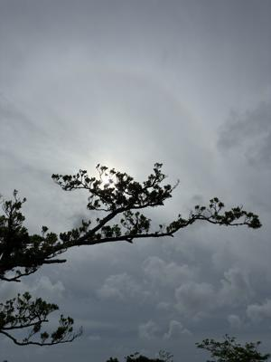
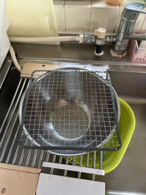

うるがいの話 ある日
最新: ウチカビについて【うるがいの話 ある日】とは 一日だけのプログです
『うるがいの話』の最新一日だけのプログで、通信料が少なく経済的だ。カニの画像をクリックすると全ての日付が載る『うるがいの話』サイトを表示します
|
|
【うるがいの話】 うるがい(ｳﾙｶﾞｲ urugai)とは、『もずくがに』の名前でとても大きくなります。 |
|---|---|
|
|
【カミマヤーの話】 猫のことを方言でマヤーといいます。カミマヤー（kamimayaa）とは、神の猫のことです。 |
|
【たながぁの音楽】 たながぁ（ﾀﾅｶﾞｰ tanagaa）とは手長えびのことで、何種類かあり大きいのは車 エビぐらいになります。 |

|
【ぶながぁの話】 ぶながぁ(ﾌﾞﾅｶﾞｰ bunagaa)とは、赤い髪の毛、赤い身体、そして身長は１ｍ２０ｃｍ ぐらい、川の蟹を食べているの目撃された。場所は沖縄県国頭郡大宜味村のと ある村僕の隣近所に住んでいる爺さんから、聞いた話です。 |
|
|
【ギーマの話】 ギーマ(giima)とは、山原の里山に咲くスズランに似た、 花を付けます。実は食べられます、 気が付くと口の周りが紫になっています。 |
2026年08月28日 (金）ウチカビについて
15:57

仕事を終えたコドモが一人で家に来た。ゴマがいない！とヨメが
怒っている。あれ？、了解済では・・・。ナカビは台風接近のた
め、来ないで、ウンケーも天気が悪ければ、コドモ一人でいいよ
と伝えたつもりだが。コドモは、ウンケーは一人で来るものだと
捉えたようだ。で、来年も同じことが起きないようにメモするこ
と（ついでに今年もハマったウチカビについても）にした。
１．ウチカビの枚数は
旧盆・ウークイでの基本的な枚数目安
多く紹介される目安は、1人あたり3枚1組（天・地・海に1枚
ずつ）です。
フムフム、あれそもそも一枚とは、よくみると３枚で一束に
なっている。では、一人一束とするべ。さて、一人とは、グ
ソウーの人が持って行く ものだから位牌に、ある人とし
た（ネットでみると違うようだが）
２．ウチカビを焚くか
今年は、燃やさない。ヤンバルでも燃やさないケースをみた
よと言った が、燃やすもの！と拒絶された。
でも、これまでの家の中の惨事を考えると外だよと、玄関先
で私一人で燃やした。が、風がまだまだあるので火のついた
ウチカビが、飛ばないように苦労する。家に入ると、上着に
ススがついている！と言われ、外でススを払う。

金属ボウルに水を張り、金網を乗せ金属の火箸を使って３枚一束
のウチカビを燃やす。（燃やしたあとネットでは、酒と水をかぶ
せるとあるが無し）。金属ボウルは、その後、供え物などを入れ
て手土産として西の方向にある（父親のご先祖様が、西の海で亡
くなったのでと親に教えられた）門で、サヨナラをする。
３．その他
ウンケーの日のジョギングは、ご先祖様の夕ご飯の時間夜５時過
ぎまでに終えていること。ウンケーが終了した後、片付けをして
いたら夜９時頃になっていた。
お見送りする最後のヒラウコー（平御香）の数は、位牌の人の数
にした。ネットでは、ジュウニフンウコー(十二本御香)とあった
が、ヒラウコーは６つの区切りなので２枚となるが、これだと多
すぎて香炉が熱くなるので危険（昔、香炉が割った）
とりあえず、メモとしてはこれでいいかな。